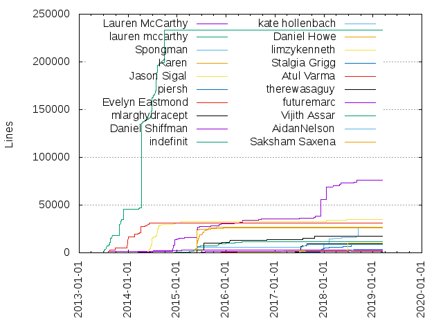

Authors
| Author | Commits (%) | + lines | - lines | First commit | Last commit | Age | Active days | # by commits |
|---|
| Lauren McCarthy | 2062 (32.21%) | 76442 | 162436 | 2013-02-25 | 2019-03-11 | 2204 days, 18:58:33 | 657 | 1 |
| lauren mccarthy | 700 (10.93%) | 233583 | 133505 | 2011-02-16 | 2014-11-03 | 1356 days, 3:34:30 | 187 | 2 |
| Spongman | 263 (4.11%) | 27084 | 21197 | 2017-06-26 | 2019-03-08 | 620 days, 15:00:35 | 113 | 3 |
| Karen | 212 (3.31%) | 26671 | 22152 | 2015-05-13 | 2016-05-21 | 373 days, 12:35:48 | 68 | 4 |
| Jason Sigal | 199 (3.11%) | 34900 | 22600 | 2014-02-07 | 2019-01-10 | 1797 days, 15:32:24 | 76 | 5 |
| piersh | 143 (2.23%) | 9256 | 9018 | 2017-07-10 | 2018-12-18 | 525 days, 19:25:16 | 65 | 6 |
| Evelyn Eastmond | 139 (2.17%) | 31318 | 15414 | 2013-08-05 | 2014-06-24 | 323 days, 7:13:41 | 46 | 7 |
| mlarghydracept | 135 (2.11%) | 9194 | 2497 | 2017-03-02 | 2017-09-06 | 187 days, 14:24:23 | 58 | 8 |
| Daniel Shiffman | 125 (1.95%) | 3127 | 644 | 2014-03-06 | 2017-04-10 | 1131 days, 0:33:09 | 47 | 9 |
| indefinit | 122 (1.91%) | 11919 | 11499 | 2014-12-15 | 2016-07-12 | 574 days, 9:45:10 | 63 | 10 |
| kate hollenbach | 120 (1.87%) | 8428 | 10916 | 2015-05-27 | 2018-08-24 | 1185 days, 4:20:20 | 68 | 11 |
| Daniel Howe | 106 (1.66%) | 26307 | 4380 | 2015-05-26 | 2016-05-12 | 351 days, 17:55:38 | 22 | 12 |
| limzykenneth | 84 (1.31%) | 10048 | 22537 | 2015-09-14 | 2019-01-27 | 1230 days, 22:24:21 | 57 | 13 |
| Stalgia Grigg | 75 (1.17%) | 468 | 512 | 2017-04-12 | 2019-03-11 | 698 days, 15:49:02 | 41 | 14 |
| Atul Varma | 62 (0.97%) | 1707 | 501 | 2015-10-30 | 2016-09-18 | 324 days, 9:37:06 | 29 | 15 |
| therewasaguy | 56 (0.87%) | 17349 | 2898 | 2015-03-08 | 2018-09-08 | 1280 days, 13:41:53 | 26 | 16 |
| futuremarc | 53 (0.83%) | 1480 | 409 | 2015-06-10 | 2015-11-07 | 149 days, 21:17:13 | 21 | 17 |
| Vijith Assar | 50 (0.78%) | 325 | 215 | 2018-05-09 | 2018-07-12 | 64 days, 2:46:56 | 9 | 18 |
| AidanNelson | 50 (0.78%) | 3418 | 1267 | 2018-05-22 | 2018-08-11 | 80 days, 16:10:33 | 29 | 19 |
| Saksham Saxena | 48 (0.75%) | 2186 | 1838 | 2017-06-09 | 2017-10-01 | 114 days, 10:13:34 | 30 | 20 |
These didn't make it to the top: Oliver Wright, Joe Cridge, XY Feng, Matthew Kaney, Jared Sprague, almchung, Chris Hallberg, Pierre Krafft, thethp, Michael Hadley, David Newbury, Adil Rabbani, Evelyn Masso, Kevin Siwoff, K. Adam White, Derek Kinsman, dhowe, codeanticode, aferriss, Sanchit Kapoor, Jordan Shaw, Blaize Kaye, OhJia, Kevin Barabash, bobholt, K.Adam White, tau-, TanviKumar, Sarah GP, Maciej Stankiewicz, jayssj11, montoyamoraga, austin, Ying Quan Tan, Nitish Bansal, Christine de Carteret, hrishit, L05, GoToLoop, Danny Robinson, Ajayneethikannan, XY, Max Goldstein, Claire K-V, vipulrawat, taseenb, Yannick Assogba, Sparsh Paliwal, Kenneth Lim, Jonathan Dahan, Jiaying (Karen) Peng, Frederik Ring, David Rodrigues, Sanket Singh, Jason Mandel, Harkirat Singh, sakshamsaxena, hackertron, chst1, bomoko, Mikael Lindqvist, Mark, Jithin KS, Faith Yu, Darius Morawiec, Darby Rathbone, AlM Chng, fabiantheblind, Tyler Stefanich, Sithe Ncube, Lionel Ringenbach, John Pasquarello, Francesco Bigiarini, Chiun Hau You, p5js, johnpasquarello, jay, harkirat, evelyn masso, Xavier Snelgrove, Mike Anderson, Max Segal, Kevin Ho, Jen Kagan, Ewan Johnstone, DoubleJump, Chris Lusto, Chan Jun Shern, AKASH RAJ, seagalputra, paolo, matt, lad475, figraham, feedzh, digitalfrost, Thomas Diewald, Scott Garner, Sam, Luxapodular, Jorge Moreno, Johan Karlsson, Harsh Agrawal, Adam Ferriss, Aatish Bhatia, shinytang6, nicu31, gtoast, gsoc, evhan55, elgin mclaren, benjaminhabert, arihant parsoya, aatishb, Vedhant Agarwal, Utkarsh Tiwari, Tanvi Kumar, Stephanie, Sejo Vega-Cebrián, Robyn, Niels Joubert, Max, Marcus Parsons, Ken Miller, Joshua Marris, Jimish Fotariya, Jaymz Rhime, Federico Grandi, Chandler McWilliams, Brad Buchanan, Ashwath Bhat L, Alberto Di Biase, Adrian Vogt, Adil, A M Chung, zacharystenger, xty, wmmnola, odm275, nikolas, mxchelle, kroko, harshil goel, aj_ryuk, Zoe Ingram, Zeno Zeng, Yuting Lu, Yana Agun Siswanto, Varsha, Steven Green, Stefterv, Siphonophora, Sheamus Burns, Seth Kranzler, Reed, Przemek Dragańczuk, Nick Yahnke, Laksh Singla, Kevin Bradley, Justin Sun-ho Kim, JoshuaStorm, Jordan Matelsky, Jason Gessner, Jared Donovan, Dana Mulder, Caroline Record, Caroline Hermans, Benjamin Hinchley, Austin Cawley-Edwards, Ashris Choudhury, Anthony Su, Aidan Nelson, Aemon Malone, Abe Pazos, ᶘ ᵒᴥᵒᶅ Karen, verma-varsha, trych, stevengreens10, skwidz, shaharyar-shamshi, sanjeetbhatti, sahil, rscharfer, remcodejong, rMazeiks, quinox, qoutroy, oxxie, nimish, niklas, mislavmilicevic, mindofmatthew, mayaman26, mattdesl, kfrajer, katsuya, jvolker, joan, irisyuan, ihsavru, iamjessklein, hascheidl, gemedet, g-rocket, emclaren, christinedt, bentona, bathcat, andrewjtimmons, acasmith, aarón montoya-moraga, Zeke Abuhoff, YuriiHoliuk, Yang Su, Xavier Ho, Vipul, Vincent Klaiber, Tuk Bredsdorff, Tristan Strange, Tiago Morais Morgado, Sıtkı Bağdat, Stephen Kempin, SongHia, Singh, Simon Tate, Simon Schmid, Sarah Joy Calpo, Sam Lavigne, Ryan Merritt, Roy Vanegas, Rostyslav Diachok, Rikkert Koppes, Richo, Richard Michael, Ramsey Nasser, Pol Martin, Petros Amiridis, Peter Dave Hello, Patrick McSherry, Pascal Borreli, Parminder Singh, Nik Nyby, Mislav Milicevic, Mike Pennisi, Michael Hairston, Martin Schneider, Manoel Lobo, Lujun Weng, Liz Starin, Leonardo Monteiro Fernandes, Landrok, Kyle McDonald, Knut Jackowski, Kjetil Midtgarden Golid, Kevin Workman, Kevin Kirsche, Kendall Jackson, KUSHA B K, Joshua Boyd, Joseph Whittington, Jonathan Maes, John Grosen, John Farrell, Joan Leon, JithinKS97, Jevon Wright, Jason Farwell, Jacob Lee, Guillaume Pelletier-Auger, Grigoriy Titaev, Griffith Young, Greg Edwards, Grant Patterson, Georgios Kaleadis, Gareth Lewin, GABBAR1947, Erik Butcher, Dominic Jodoin, Derrick McMillen, David Wicks, Daniel Ruf, Daniel Prado, CrazyInfin8, Cosme Escobedo, Corey Gouker, Cody Fuller, Chris Windsor, Chris John Ryan, Ceesjan Luiten, Cameron Yick, Caleb Eggensperger, Caitlin, Brian Whitman, Bob Ippolito, Benoit, Benjamin Davies, Ben Wendt, Ben Scheiner, Ben Moren, Ayush Sharma, Arihant Parsoya, Arbaaz, Antonio Jesús Sánchez Padial, Antonio J. S. Padial, Ankita Saxena, Alex Dean, AkashGutha, Akash Gutha, Akash, Adwaith, Adam Smith, Abishake, Aaron Harpole
Only top 20 authors shown
Only top 20 authors shown
| Month | Author | Commits (%) | Next top 5 | Number of authors |
|---|
| 2019-03 | Lauren McCarthy | 8 (25.81% of 31) | Joe Cridge, Ajayneethikannan, Stalgia Grigg, Sanket Singh, Ashwath Bhat L | 11 |
| 2019-02 | Lauren McCarthy | 13 (25.49% of 51) | Spongman, Stalgia Grigg, evelyn masso, Stefterv, Sanket Singh | 16 |
| 2019-01 | Lauren McCarthy | 19 (38.78% of 49) | Ajayneethikannan, matt, Joe Cridge, limzykenneth, aferriss | 17 |
| 2018-12 | Lauren McCarthy | 39 (56.52% of 69) | Spongman, piersh, figraham, Vedhant Agarwal, Varsha | 16 |
| 2018-11 | Lauren McCarthy | 33 (55.93% of 59) | vipulrawat, L05, TanviKumar, Justin Sun-ho Kim, sanjeetbhatti | 12 |
| 2018-10 | Lauren McCarthy | 11 (45.83% of 24) | digitalfrost, L05, piersh, limzykenneth, Kevin Bradley | 9 |
| 2018-09 | Lauren McCarthy | 25 (46.30% of 54) | Spongman, L05, limzykenneth, Chan Jun Shern, nikolas | 13 |
| 2018-08 | Lauren McCarthy | 48 (37.50% of 128) | AidanNelson, Pierre Krafft, kate hollenbach, Jithin KS, TanviKumar | 24 |
| 2018-07 | Lauren McCarthy | 21 (20.59% of 102) | kate hollenbach, AidanNelson, Vijith Assar, Spongman, Adil Rabbani | 19 |
| 2018-06 | kate hollenbach | 24 (19.83% of 121) | Vijith Assar, AidanNelson, Lauren McCarthy, limzykenneth, aferriss | 19 |
| 2018-05 | Lauren McCarthy | 65 (37.79% of 172) | Spongman, Vijith Assar, kate hollenbach, Oliver Wright, Frederik Ring | 19 |
| 2018-04 | Lauren McCarthy | 51 (44.74% of 114) | Spongman, piersh, Faith Yu, Aatish Bhatia, lad475 | 17 |
| 2018-03 | Spongman | 15 (25.86% of 58) | Lauren McCarthy, piersh, kate hollenbach, seagalputra, benjaminhabert | 15 |
| 2018-02 | Lauren McCarthy | 18 (31.58% of 57) | piersh, Spongman, limzykenneth, Lionel Ringenbach, tau- | 14 |
| 2018-01 | Lauren McCarthy | 46 (21.90% of 210) | Spongman, piersh, Stalgia Grigg, tau-, kate hollenbach | 25 |
| 2017-12 | piersh | 55 (28.35% of 194) | Spongman, Lauren McCarthy, Stalgia Grigg, Nitish Bansal, jayssj11 | 16 |
| 2017-11 | Spongman | 23 (23.96% of 96) | Lauren McCarthy, piersh, Maciej Stankiewicz, Pierre Krafft, Ewan Johnstone | 16 |
| 2017-10 | Lauren McCarthy | 243 (76.18% of 319) | Spongman, Blaize Kaye, Jared Sprague, Oliver Wright, Pierre Krafft | 22 |
| 2017-09 | Lauren McCarthy | 25 (29.07% of 86) | Oliver Wright, austin, Evelyn Masso, kate hollenbach, Stalgia Grigg | 18 |
| 2017-08 | mlarghydracept | 32 (25.20% of 127) | Lauren McCarthy, Saksham Saxena, Evelyn Masso, almchung, kate hollenbach | 13 |
| 2017-07 | mlarghydracept | 41 (28.08% of 146) | Lauren McCarthy, Saksham Saxena, Spongman, kate hollenbach, almchung | 17 |
| 2017-06 | Lauren McCarthy | 29 (28.43% of 102) | mlarghydracept, almchung, Saksham Saxena, bomoko, David Rodrigues | 16 |
| 2017-05 | Lauren McCarthy | 30 (42.25% of 71) | mlarghydracept, Stalgia Grigg, Michael Hadley, David Rodrigues, dhowe | 8 |
| 2017-04 | mlarghydracept | 18 (35.29% of 51) | Lauren McCarthy, limzykenneth, dhowe, Stalgia Grigg, AlM Chng | 11 |
| 2017-03 | Lauren McCarthy | 23 (57.50% of 40) | limzykenneth, mlarghydracept, Ashris Choudhury, almchung, YuriiHoliuk | 11 |
| 2017-02 | limzykenneth | 17 (48.57% of 35) | Lauren McCarthy, Tyler Stefanich, feedzh, dhowe | 5 |
| 2017-01 | Lauren McCarthy | 18 (50.00% of 36) | Max Segal, feedzh, limzykenneth, Johan Karlsson, Aemon Malone | 10 |
| 2016-12 | Lauren McCarthy | 29 (74.36% of 39) | harkirat, wmmnola, Daniel Shiffman, Sıtkı Bağdat, Johan Karlsson | 6 |
| 2016-11 | Lauren McCarthy | 10 (66.67% of 15) | Joshua Marris, therewasaguy, Jorge Moreno | 4 |
| 2016-10 | Lauren McCarthy | 20 (52.63% of 38) | Matthew Kaney, Daniel Shiffman, Kevin Siwoff, Joe Cridge, sakshamsaxena | 9 |
| 2016-09 | Lauren McCarthy | 19 (61.29% of 31) | Atul Varma, therewasaguy, Matthew Kaney, Jason Sigal, limzykenneth | 8 |
| 2016-08 | Lauren McCarthy | 19 (54.29% of 35) | Claire K-V, gemedet, Martin Schneider, AkashGutha, Akash Gutha | 7 |
| 2016-07 | Lauren McCarthy | 26 (50.00% of 52) | Darius Morawiec, indefinit, Sejo Vega-Cebrián, Michael Hadley, Matthew Kaney | 13 |
| 2016-06 | Lauren McCarthy | 30 (50.00% of 60) | Matthew Kaney, Joe Cridge, Jiaying (Karen) Peng, Chiun Hau You, indefinit | 18 |
| 2016-05 | Lauren McCarthy | 30 (30.00% of 100) | Michael Hadley, indefinit, Karen, Matthew Kaney, limzykenneth | 14 |
| 2016-04 | Lauren McCarthy | 30 (58.82% of 51) | indefinit, Atul Varma, limzykenneth, Tuk Bredsdorff, Matthew Kaney | 11 |
| 2016-03 | Lauren McCarthy | 30 (38.96% of 77) | Atul Varma, indefinit, Karen, Matthew Kaney, Kevin Siwoff | 13 |
| 2016-02 | Lauren McCarthy | 25 (54.35% of 46) | Sparsh Paliwal, Atul Varma, therewasaguy, limzykenneth, Sanchit Kapoor | 10 |
| 2016-01 | Lauren McCarthy | 20 (38.46% of 52) | indefinit, Kevin Siwoff, Sparsh Paliwal, therewasaguy, arihant parsoya | 10 |
| 2015-12 | Lauren McCarthy | 28 (58.33% of 48) | indefinit, Atul Varma, gtoast, Kevin Siwoff, Daniel Howe | 10 |
| 2015-11 | Lauren McCarthy | 70 (38.04% of 184) | Atul Varma, therewasaguy, indefinit, Sanchit Kapoor, Joe Cridge | 20 |
| 2015-10 | Lauren McCarthy | 68 (37.36% of 182) | Karen, Joe Cridge, Jared Sprague, futuremarc, Daniel Shiffman | 18 |
| 2015-09 | Lauren McCarthy | 75 (54.35% of 138) | Karen, Jared Sprague, limzykenneth, Daniel Howe, indefinit | 16 |
| 2015-08 | Karen | 64 (43.84% of 146) | Lauren McCarthy, Daniel Shiffman, indefinit, Max Goldstein, XY | 13 |
| 2015-07 | Karen | 49 (30.06% of 163) | Lauren McCarthy, OhJia, Daniel Howe, futuremarc, K. Adam White | 14 |
| 2015-06 | Lauren McCarthy | 41 (30.60% of 134) | Karen, futuremarc, Daniel Howe, indefinit, David Newbury | 17 |
| 2015-05 | Lauren McCarthy | 96 (25.95% of 370) | Daniel Howe, XY Feng, Chris Hallberg, therewasaguy, Karen | 27 |
| 2015-04 | Lauren McCarthy | 16 (38.10% of 42) | Mark, K.Adam White, indefinit, David Newbury, zacharystenger | 9 |
| 2015-03 | Lauren McCarthy | 27 (57.45% of 47) | K.Adam White, Francesco Bigiarini, indefinit, Benjamin Hinchley, therewasaguy | 8 |
| 2015-02 | Lauren McCarthy | 39 (43.82% of 89) | GoToLoop, Daniel Shiffman, Kevin Barabash, David Newbury, Mike Anderson | 11 |
| 2015-01 | Lauren McCarthy | 31 (52.54% of 59) | Kevin Barabash, Daniel Shiffman, Jason Sigal, Ken Miller, John Pasquarello | 7 |
| 2014-12 | Lauren McCarthy | 56 (66.67% of 84) | Darby Rathbone, johnpasquarello, Jason Sigal, Daniel Shiffman, John Pasquarello | 9 |
| 2014-11 | Lauren McCarthy | 37 (47.44% of 78) | Jordan Shaw, Jonathan Dahan, lauren mccarthy, Mikael Lindqvist, Jason Sigal | 13 |
| 2014-10 | lauren mccarthy | 14 (63.64% of 22) | Kevin Ho, Lauren McCarthy, Francesco Bigiarini | 4 |
| 2014-09 | lauren mccarthy | 37 (50.68% of 73) | Lauren McCarthy, fabiantheblind, Jason Sigal, Scott Garner, Daniel Shiffman | 9 |
| 2014-08 | lauren mccarthy | 80 (43.48% of 184) | Jason Sigal, Lauren McCarthy, hrishit, Daniel Shiffman, Alberto Di Biase | 11 |
| 2014-07 | lauren mccarthy | 73 (50.69% of 144) | Jason Sigal, Daniel Shiffman, Derek Kinsman, Lauren McCarthy | 5 |
| 2014-06 | lauren mccarthy | 88 (42.11% of 209) | Jason Sigal, Evelyn Eastmond, Lauren McCarthy, Derek Kinsman, Daniel Shiffman | 10 |
| 2014-05 | lauren mccarthy | 56 (65.88% of 85) | Evelyn Eastmond, Jason Sigal, Lauren McCarthy, taseenb | 5 |
| 2014-04 | lauren mccarthy | 50 (56.82% of 88) | Lauren McCarthy, Daniel Shiffman, Evelyn Eastmond, taseenb, thethp | 10 |
| 2014-03 | lauren mccarthy | 34 (24.11% of 141) | Evelyn Eastmond, thethp, Daniel Shiffman, Jason Sigal, taseenb | 11 |
| 2014-02 | lauren mccarthy | 11 (39.29% of 28) | Evelyn Eastmond, Yannick Assogba, K.Adam White, Jason Sigal | 5 |
| 2014-01 | bobholt | 16 (66.67% of 24) | Evelyn Eastmond, lauren mccarthy | 3 |
| 2013-12 | lauren mccarthy | 3 (100.00% of 3) | | 1 |
| 2013-11 | lauren mccarthy | 31 (65.96% of 47) | Lauren McCarthy, Sam Lavigne | 3 |
| 2013-10 | lauren mccarthy | 27 (51.92% of 52) | Lauren McCarthy, Evelyn Eastmond, codeanticode | 4 |
| 2013-09 | lauren mccarthy | 18 (35.29% of 51) | codeanticode, Evelyn Eastmond, Lauren McCarthy, Ying Quan Tan | 5 |
| 2013-08 | Lauren McCarthy | 63 (44.68% of 141) | lauren mccarthy, Evelyn Eastmond, Ying Quan Tan, evhan55 | 5 |
| 2013-07 | lauren mccarthy | 101 (87.83% of 115) | Lauren McCarthy | 2 |
| 2013-06 | lauren mccarthy | 21 (100.00% of 21) | | 1 |
| 2013-05 | lauren mccarthy | 2 (100.00% of 2) | | 1 |
| 2013-04 | lauren mccarthy | 2 (100.00% of 2) | | 1 |
| 2013-03 | Lauren McCarthy | 2 (100.00% of 2) | | 1 |
| 2013-02 | Lauren McCarthy | 5 (100.00% of 5) | | 1 |
| 2011-02 | lauren mccarthy | 1 (100.00% of 1) | | 1 |
| Year | Author | Commits (%) | Next top 5 | Number of authors |
|---|
| 2019 | Lauren McCarthy | 40 (30.53% of 131) | Spongman, Ajayneethikannan, Stalgia Grigg, Joe Cridge, Sanket Singh | 32 |
| 2018 | Lauren McCarthy | 380 (32.53% of 1168) | Spongman, kate hollenbach, piersh, Vijith Assar, AidanNelson | 112 |
| 2017 | Lauren McCarthy | 499 (38.30% of 1303) | mlarghydracept, Spongman, piersh, Saksham Saxena, Stalgia Grigg | 81 |
| 2016 | Lauren McCarthy | 288 (48.32% of 596) | indefinit, Matthew Kaney, Atul Varma, Michael Hadley, Karen | 64 |
| 2015 | Lauren McCarthy | 560 (34.96% of 1602) | Karen, Daniel Howe, indefinit, futuremarc, Daniel Shiffman | 81 |
| 2014 | lauren mccarthy | 450 (38.79% of 1160) | Lauren McCarthy, Jason Sigal, Evelyn Eastmond, Daniel Shiffman, thethp | 46 |
| 2013 | lauren mccarthy | 249 (56.46% of 441) | Lauren McCarthy, Evelyn Eastmond, codeanticode, Ying Quan Tan, evhan55 | 7 |
| 2011 | lauren mccarthy | 1 (100.00% of 1) | | 1 |
| Domains | Total (%) |
|---|
| gmail.com | 4722 (73.76%) |
|---|
| hotmail.com | 412 (6.44%) |
|---|
| users.noreply.github.com | 154 (2.41%) |
|---|
| purchase.edu | 135 (2.11%) |
|---|
| rednoise.org | 113 (1.77%) |
|---|
| shiffman.net | 108 (1.69%) |
|---|
| nyu.edu | 72 (1.12%) |
|---|
| live.com | 55 (0.86%) |
|---|
| yahoo.com | 51 (0.80%) |
|---|
| ucla.edu | 46 (0.72%) |
|---|